& Claude だけで 3D モデルを作って
17F LODGE の 3D
プリンタで印刷して
Raspberry Pi を焼いてみよう
@ytonoyam
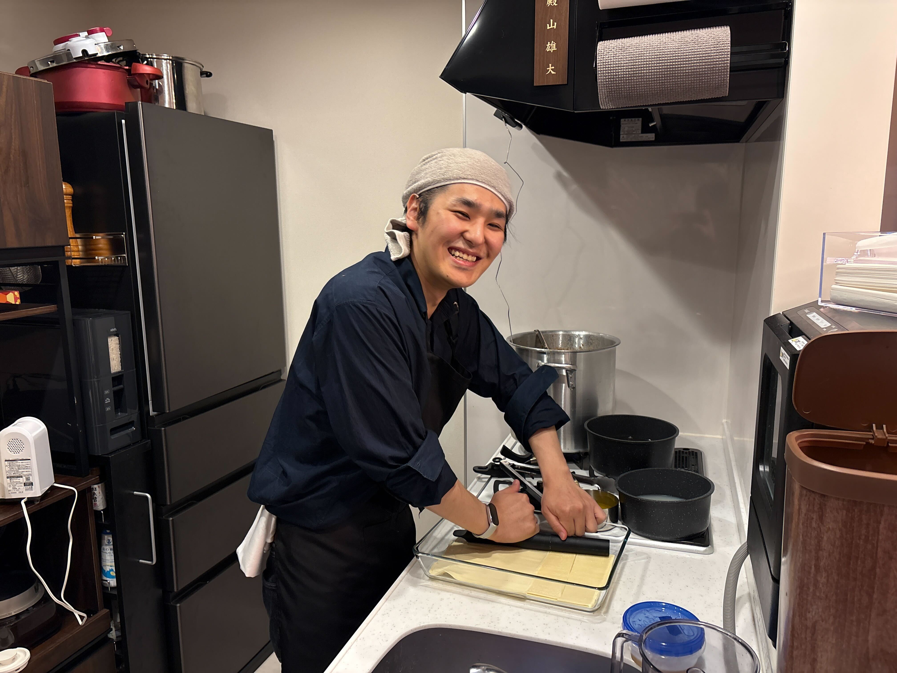
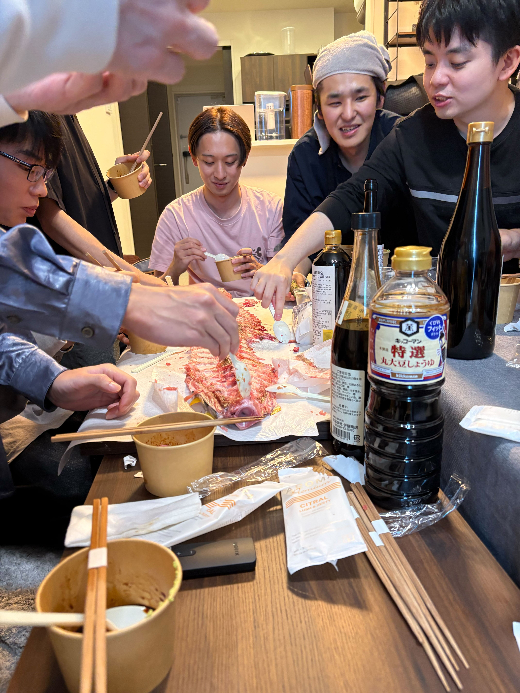
前菜：生本マグロ中落ち1本 × 青種・赤種わさび体験
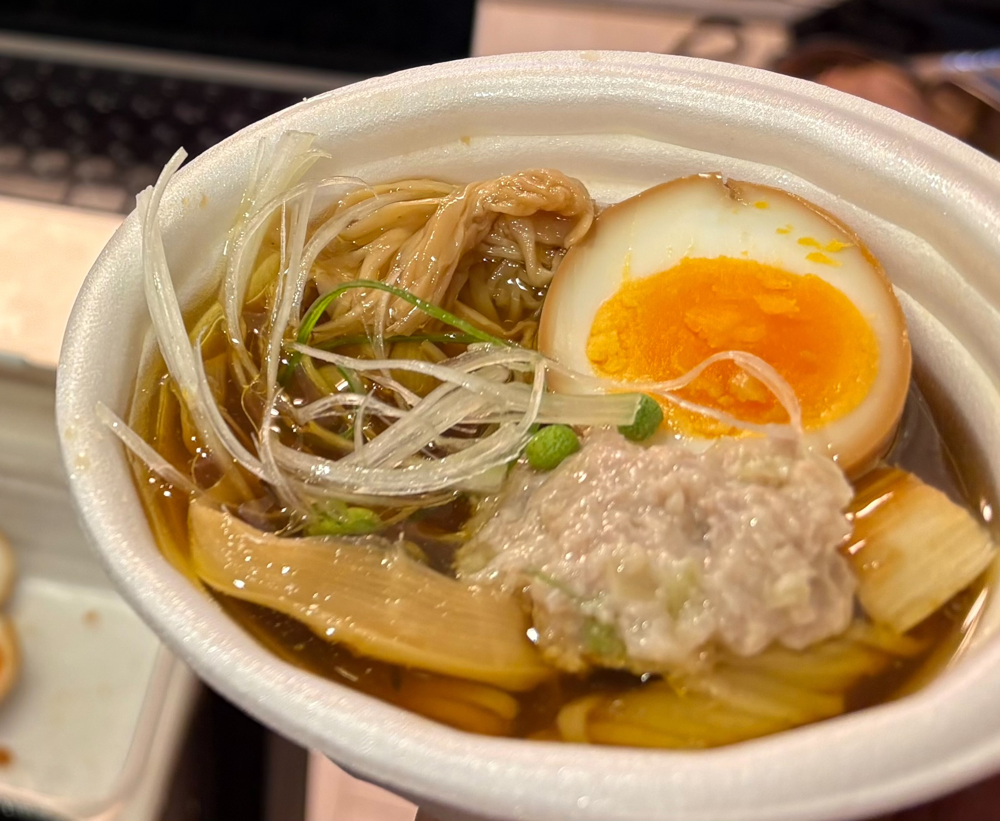
Ramen I：比内地鶏 × アサリ清湯
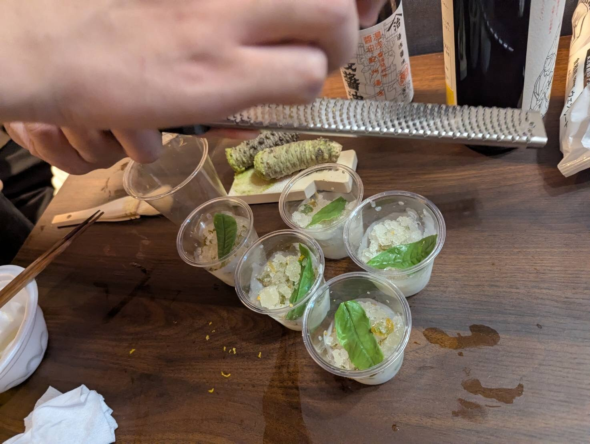
お口直し：生茶葉のグラニテ
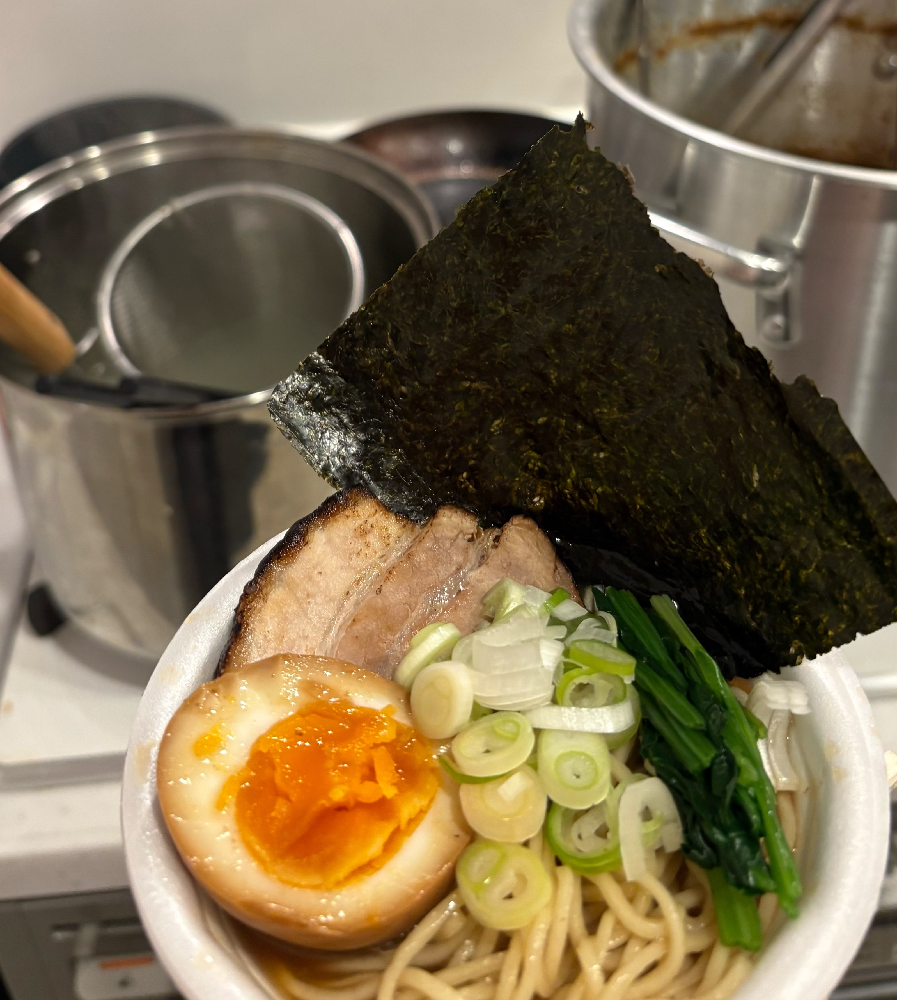
Ramen II：豚骨家系
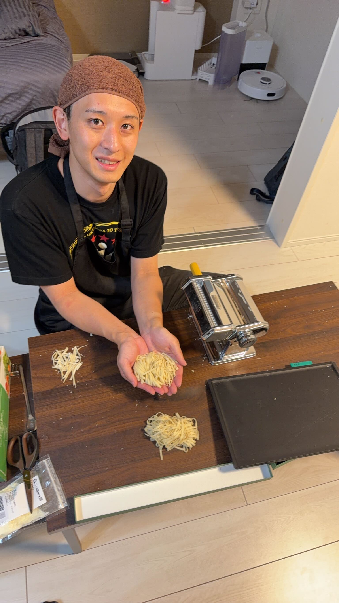
自家製麺（1mm / 3.5mm）
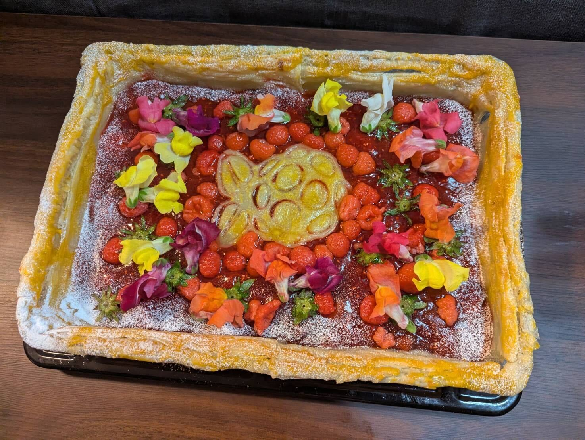
Raspberry Pi スナップドラゴン寄せ
| Unit | 主な工程 | 工程数 |
|---|---|---|
前菜 zensai-maguro |
鮪解凍 / わさび準備 / 盛り付け / ゲスト摺り体験 | 6 |
Ramen I 清湯 ramen-i-chintan |
清湯スープ12・タレ4・自家製麺8・雲吞4・ツミレ9・鶏油4・夏長ネギ3・穂先メンマ10・盛り付け7 | 61 |
お口直し palate-cleanser-granita |
生茶葉仕込 / 凍結 / 削り | 8 |
Ramen II 豚骨 ramen-ii-tonkotsu |
呼び戻しスープ13・タレ5・細麺24・焼豚13・味玉6・メンマ11・マー油5・盛り付け10 | 87 |
Dessert dessert-raspberry-pi |
パイ生地15 + いちごとマデイラのコンフィチュール + マデイラソース5 + バニラとトンカ豆のアイス8 | 28 |
Drinks drinks |
果汁氷の作り方（4工程・配合表のみ） | 4 |
| 合計 | 194 | |
※ 自家製麺（Ramen I = 8工程 / Ramen II = 24工程）は各 dish Unit に内包。
AI-Driven Development Lifecycle
3つの特徴
出典: AWS Builder Blog (2025)・Amazon Q Developer 公式ドキュメント
"なぜ作るか" を言語化。
意図・成功基準・スコープ。
Unit に分解。
1 Unit = 1 責務 = 独立に開発可能。
本番運用とフィードバック。
計測 → 学習 → 次イテレーション。
AI とペアで「設計判断」をリポジトリに残しながら開発するライフサイクル。
コース設計・誰に何を体験させたいか
1皿 = 1 Unit として独立に試作
配膳順・温度・ゲスト反応をログ化
じゃあ、料理会を AI-DLC でリポジトリ管理してみよう。
→ github.com/ytonoyam/ryourikai（仮）
ryourikai/
├── CLAUDE.md # プロジェクト憲法 (在庫・設備・前提)
├── inception/ # なぜ作るか / 成功基準 / コース全体像
└── units/
├── dish/ # 1 Unit = 1 皿
│ ├── zensai-maguro/
│ ├── ramen-i-chintan/
│ ├── palate-cleanser-granita/
│ ├── ramen-ii-tonkotsu/
│ ├── dessert-raspberry-pi/
│ └── drinks/
└── cross/ # 横断的関心ごと
├── procurement/
├── schedule/
├── noodle-craft/
├── hospitality/
└── cost-analysis/マグロ × 青種/赤種わさび × 木桶熟成たまり
Ramen I：清湯 + つみれ仕様
お口直し：静岡県産
Ramen II：呼び戻し・家系仕様
デザート Unit のメインピース ★
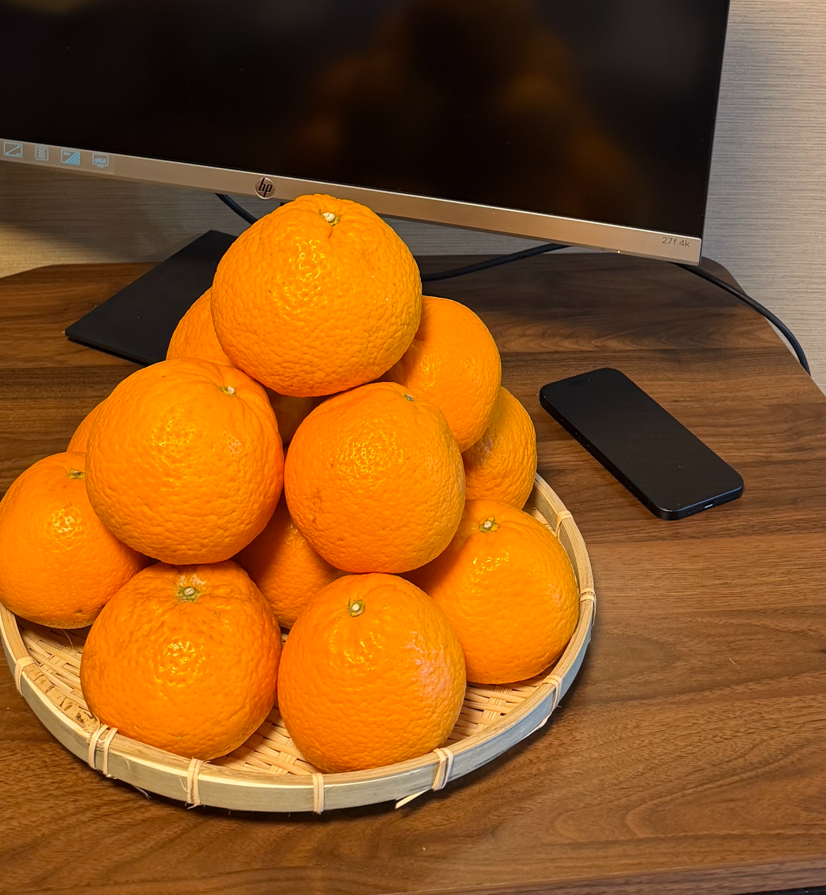
drinks Unit のドリンクペアリング
ramen-i-chintan/ramen-i-chintan/
├── README.md # この皿は何か
├── recipe.md # 12人前レシピ・本番仕様
├── trial-recipe.md # 1/4分量・試作用
├── tare/ # カエシ（タレ）
├── soup/ # 鶏 + アサリのスープ
├── tsumire/ # つみれ
└── notes.md # 試作ログ・調整履歴Dependency Management
Critical Path / Orchestration
Shared Library
UX Design
Observability / Metrics
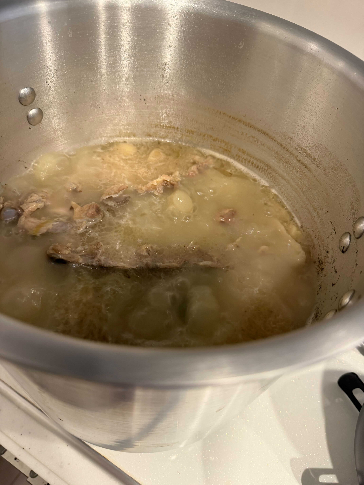
npm でいう package.json。料理会の lockfile。
D-3 ──── 仕入れ完了 / 鶏ガラ・豚骨の下処理開始
D-2 ──── スープ第一段（豚骨圧力 6h × 2回）
D-1 ──── ① スープ清湯 ② カエシ ③ つみれ ④ パイ生地 ⑤ コンフィ
15:00 製麺（Ramen II 用 1mm）
18:00 製麺（Ramen I 用 3.5mm）
D-Day ──┬─ 11:00 前菜セッティング（わさび摺り器の配置）
├─ 12:00 ゲスト着席 → 前菜
├─ 12:25 Ramen I 茹で開始
├─ 12:35 Ramen I 配膳（並列調理：12人前を 6+6 で分割）
├─ 13:10 お口直し
├─ 13:25 Ramen II 配膳
└─ 14:00 デザート → クロージング→ Critical Path = スープ。並列度を上げると IH 不足で詰まる。物理リソースが制約。
| パラメータ | Ramen I (清湯) | Ramen II (豚骨) |
|---|---|---|
| 粉ブレンド | 特ナンバーワン 70% + 飛行船 30% |
特飛龍 60% + 勇 40% |
| 加水率 | 43% | 40% |
| 切断幅 | 3.5mm（平打ち） | 1mm（細麺） |
| 厚み | 1.5mm | 1.2mm |
| 麺量/杯 | 50g | 60g |
| ↓ 共通インターフェース ↓ | ||
| 工程 | 計量 → ミキシング → 圧延 → 休ませ → 切り出し | |
| 製麺機 | ATLAS 150（共通設備） | |
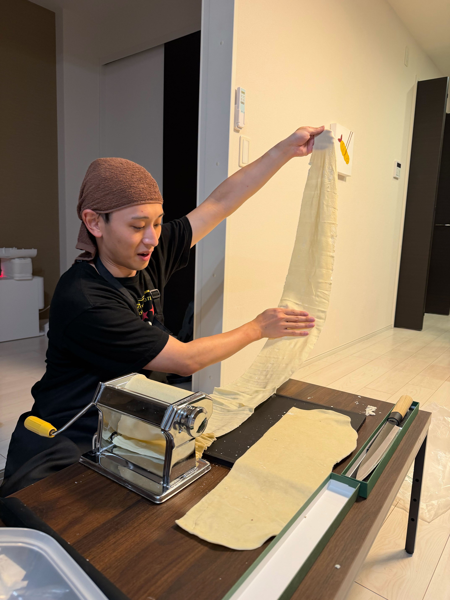
→ パラメータだけ Ramen Unit から渡し、工程は
noodle-craft に閉じる。= テンプレートメソッドパターン
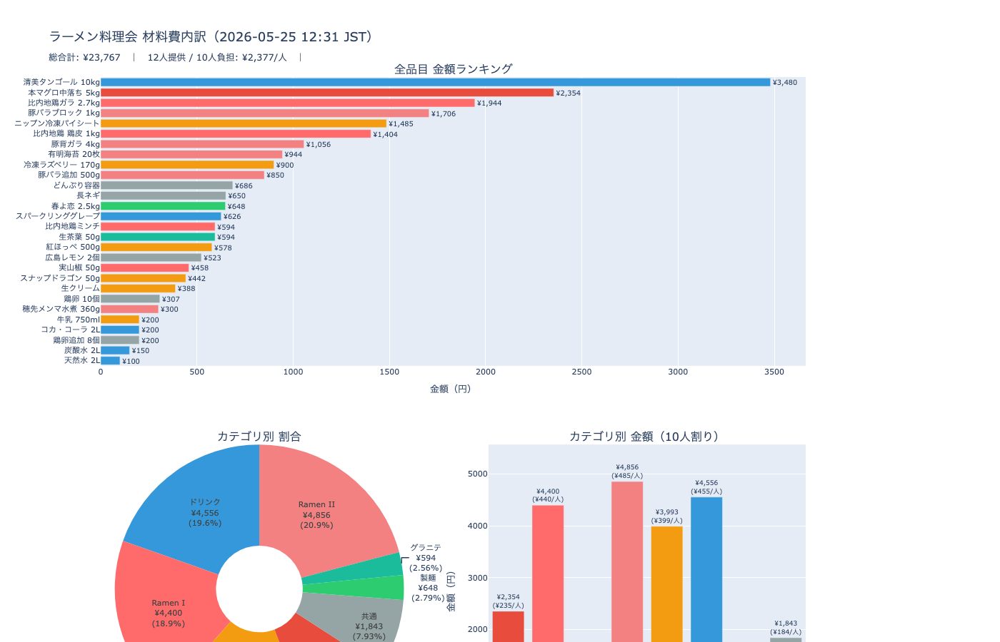
今回は無駄な仕入れが多く1人3000円だった。
ちゃんと詰めれば2500円付近まで抑えられそう
# Ramen Ryourikai
ラーメン料理会 - 同期エンジニア12人に振る舞うラーメンコース料理の管理リポジトリ。
本リポジトリは AWS AI-DLC 構造で整理されている。
## ナビゲーション
| パス | 内容 |
|------|------|
| `inception/` | 料理会の意図・成功基準・コース全体像 |
| `units/dish/` | 各料理（前菜・Ramen I・お口直し・Ramen II・デザート・Drinks）|
| `units/cross/` | 横断 Unit（procurement・schedule・hospitality・noodle-craft・cost-analysis）|
## 製麺設備 / 在庫 / 醤油 / みりん / スープ塩分濃度 ...CLAUDE.md = リポジトリのコンテキストファイル。AI とのペアリングで「毎回説明し直さなくていい」憲法。
2ac0f7a Refactor cost analysis visualizations and update ingredient details
2e18f55 Add zensai-maguro dish documentation and recipe
e74d604 feat: Ramen I をツミレ仕様に変更 + スープ比率 7:3 確定
0135153 feat: Ramen I 仕様確定（コース料理サイズ・親鳥コンフィ・実山椒風味）
c61a47b fix: ラズベリーパッセコンフィチュールのレシピをジャム仕様に変更し、砂糖比率を50%に調整
bb1f4ca feat: 麺だけ20人前仕様に増量（試作・茹でロス・バッファ対応）
1812e92 docs: 料理会本番に向けた全レシピ・スケジュール最終版
23cdbac docs: おもてなし・仕込みスケジュール・塩分濃度を追加
8d8d759 docs: 麺無双3.5mm初回試作フルレシピを追加→ "なぜその配合にしたか" が 後から辿れる。試作の意思決定が消えない。
3D printing / Raspberry Pi / 17F LODGE
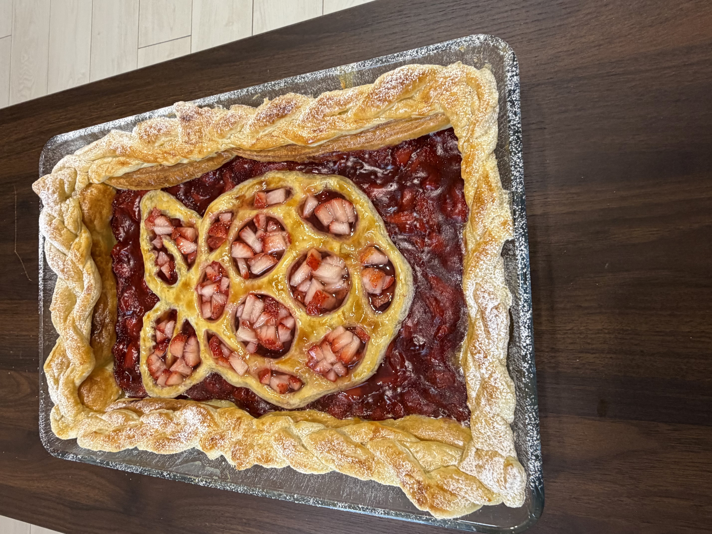
# make_cutter.py（~500 行）
import numpy as np
from PIL import Image
from scipy import ndimage
TARGET_WIDTH_MM = 63.0 # 63mm / 100mm の2サイズ
CUTTER_HEIGHT_MM = 12.0 # 5mm 生地 + 7mm grip
WALL_THICKNESS_MM = 1.2
FLANGE_WIDTH_MM = 2.5
N_OUTER = 600 # 外周サンプリング
N_HOLE = 96 # 穴サンプリング
SOLID_DIAMETER_MM = 5.0 # 小さい円は実心ポスト
# Pipeline:
# PNG (公式 Pi ロゴ)
# ↓ PIL + scipy.ndimage
# silhouette mask + 内部穴マスク
# ↓ Moore-Neighbor 境界トレース
# 外側多角形 + 穴多角形
# ↓ 法線オフセット
# inner / flange / hole-inner リング
# ↓ 組み立て
# outer cutter + 内部 tube + 連結 strut
# ↓
# SVG プレビュー + ASCII STLraspi_cutter_63mm.stl /
_100mm.stl
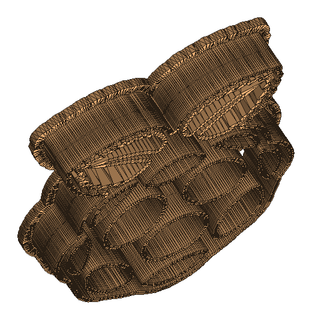
前提：3D プリンタは下から上に層を積む。空中に張り出した部分は "サポート材"（捨て柱）で支える必要があり、印刷後に剥がす作業＋表面に跡が残る。
刃（細い）が接地 → 持ち手のフランジ（広い）が
空中に張り出す
サポート材が必要 →
剥がす手間＋刃の表面に跡
広い 持ち手のフランジを接地 →
上に向かって刃まで地続きに積み上がる
→
サポート材ゼロ。剥がし作業なし＋刃側がツルツル仕上がる
make_cutter.py の
FLIP_FOR_PRINT = True パラメータで自動で上下反転
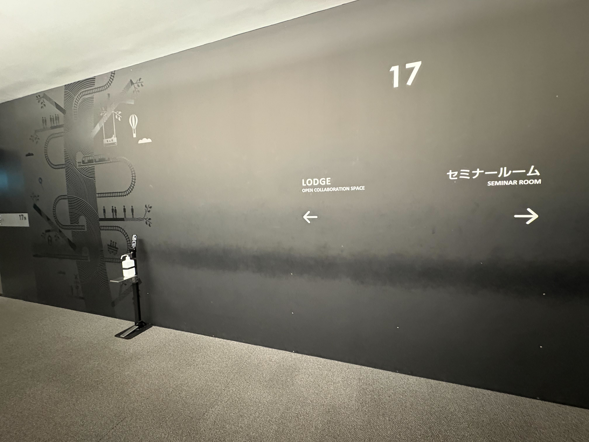
① 17F LODGE 入口
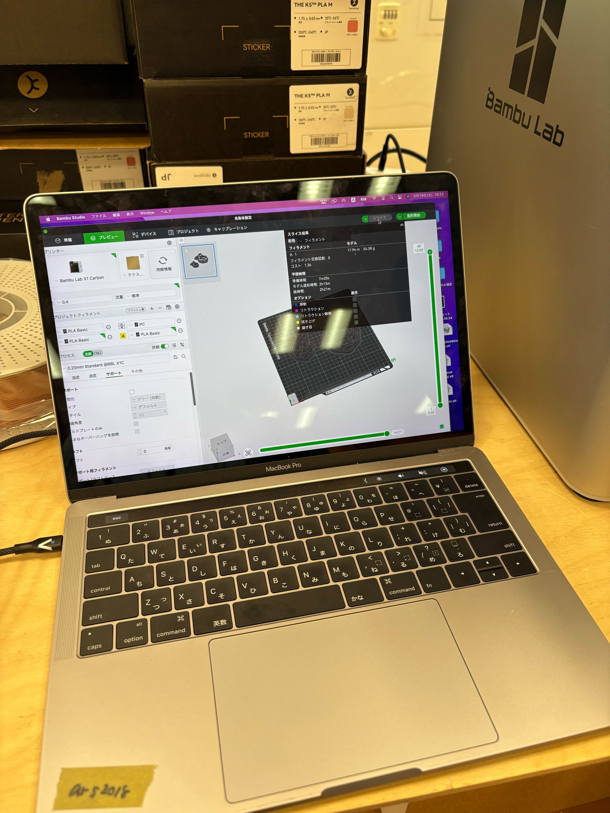
② Bambu Studio でスライス
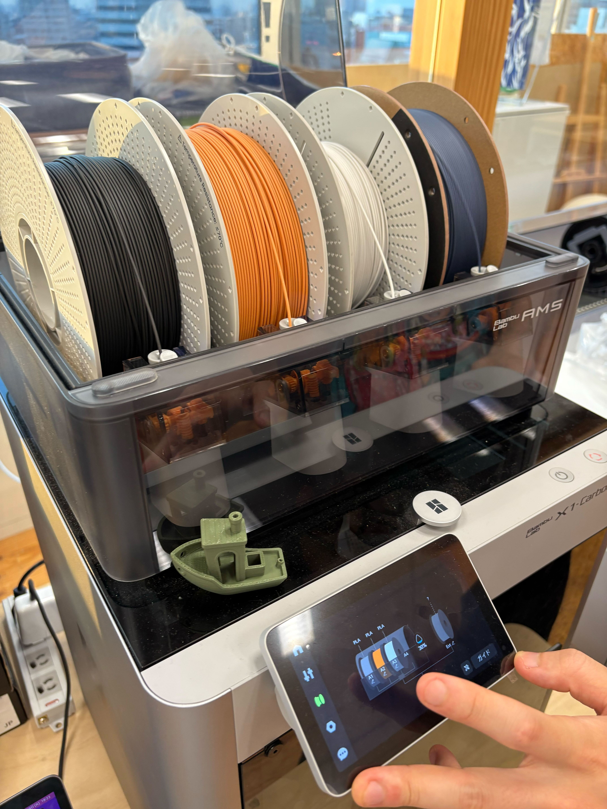
③ Bambu Lab プリンタ（AMS 付き）
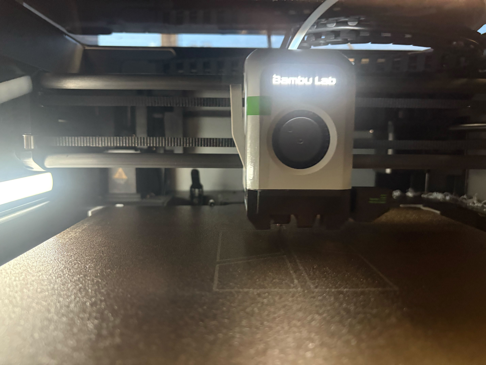
④ プリント開始（Bambu Lab ヘッド）
9 フレームを ffmpeg で結合。ノズルが Pi ロゴの輪郭を描き、徐々に立体化していく。
Claude と対話 → STL
LODGE 17F・PLA・約2h。成形後、フィラメントの糸引きを除去
パイ生地を Pi ロゴに型抜き
200℃で15分、ロゴが立体的に膨らむ
パイプライン全体を Claude との対話 4 セッションで完了。
→
units/dish/dessert-raspberry-pi/
の最終アウトプット。
中央のヘキサゴン =
3Dプリント・カッターで抜いたパイ生地。
周囲のスナップドラゴンの花とラズベリーで盛り付け。
前菜：マグロ × わさび体験
Ramen I：比内地鶏 × アサリ清湯
お口直し：生茶葉のグラニテ
Ramen II：豚骨家系
自家製麺（1mm / 3.5mm）
Raspberry Pi スナップドラゴン寄せ
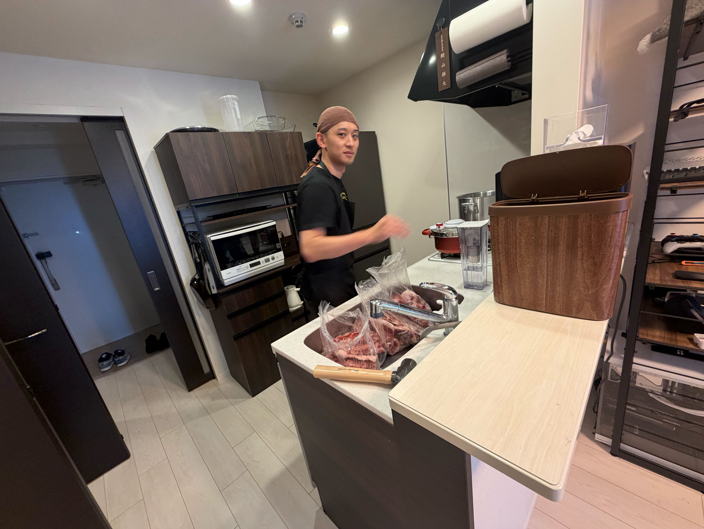